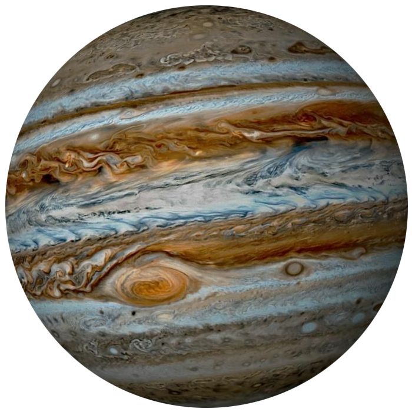

Почему Юпитер так называется?
Поскольку Юпитер хорошо заметен на небе, еще в древности люди давали ему различные названия. Римляне прозвали гиганта в честь своего бога неба и грома. Даже когда на территории государства было введено христианство, древние мифы так плотно вошли в быт жителей, что их было невозможно искоренить. Такая ситуация получилась и с астрономией. До сих пор многие звезды, планеты и галактики носят имена древних богов, и Юпитер не является исключением.
- Масса – 1,9*1027 кг
- Диаметр – 142984 км
- Наклон оси – 3,1°
- Плотность – 1,33 г/см3
- Температура верхних слоев – около -160 °C
- Ускорение свободного падения – 24,8 м/c2
- Период обращения – 11,86 лет
- Спутники – 79 спутников
Возраст планеты
Точно нельзя сказать, когда именно появился Юпитер. Поскольку планета полностью состоит из газов, а любая техника довольно быстро выходит из строя по мере приближения к поверхности, у ученых отсутствует возможность взять образцы почвы и произвести какие-либо анализы. Считается, что Юпитер появился 4,6 млрд лет назад, когда образовалась Солнечная система. После взрыва сверхновой в пространстве, где сейчас находятся планеты, возникло облако из газа и пыли. Взрывная волна оказала на него сильное давление, из-за которого в определенных местах начали формироваться уплотнения. Постепенно они превратились в планеты.
Кольца Юпитера
Юпитер имеет кольца, правда они не так заметны, как у Сатурна. Они состоят преимущественно из пыли и мелкой крошки, которая удерживается за счет силы притяжения газового гиганта. Считается, что кольца Юпитера образовались из-за частого столкновения его спутников с астероидами. От удара небольшие объекты улетали в открытый космос и притягивались планетой, а ее стремительная скорость вращения сформировала из них кольца.
Интересный факт: открытие спутников позволило Галилею доказать, что не все объекты во вселенной вращаются вокруг Земли. Из-за этого он подвергся гонениям католической церкви, которая утверждала, что третья планета от Солнца - центр мироздания.
Спутники Юпитера
Юпитер имеет 79 спутников, что является самым большим показателем среди планет Солнечной системы. Первые из них открыл Галилей в 1610 году с помощью изобретенного им телескопа. Наблюдая планету сквозь линзы, он практически сразу заметил четыре яркие точки, расположенные вблизи от гиганта. Что удивительно, они находились на одной линии, но постепенно двигались вокруг планеты. Первые четыре спутника прозвали “галилеевскими”, в их состав входят: Ио, Европа, Ганимед, Каллисто.